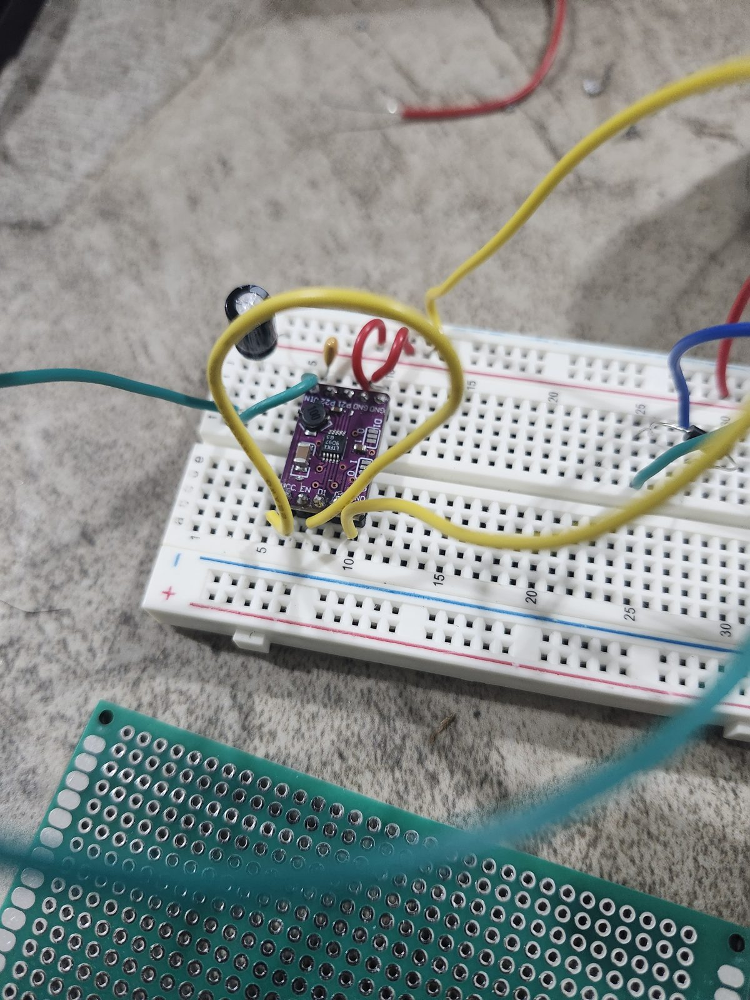
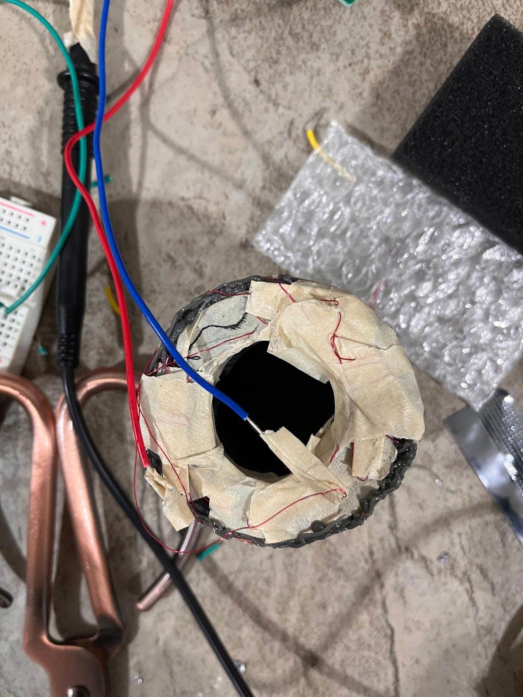
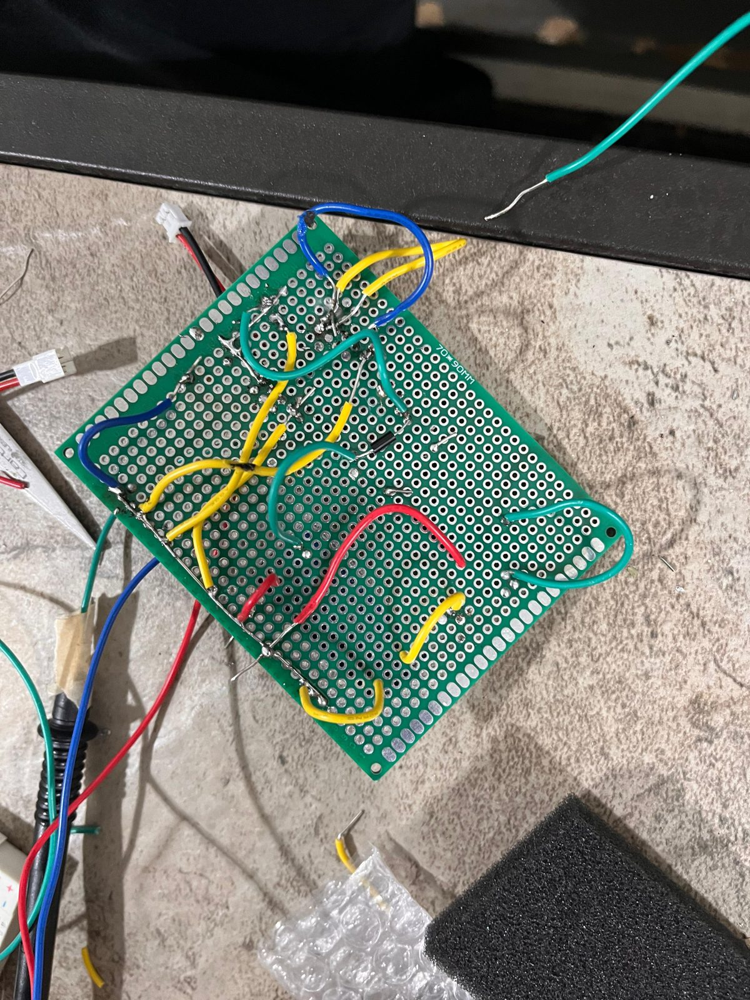
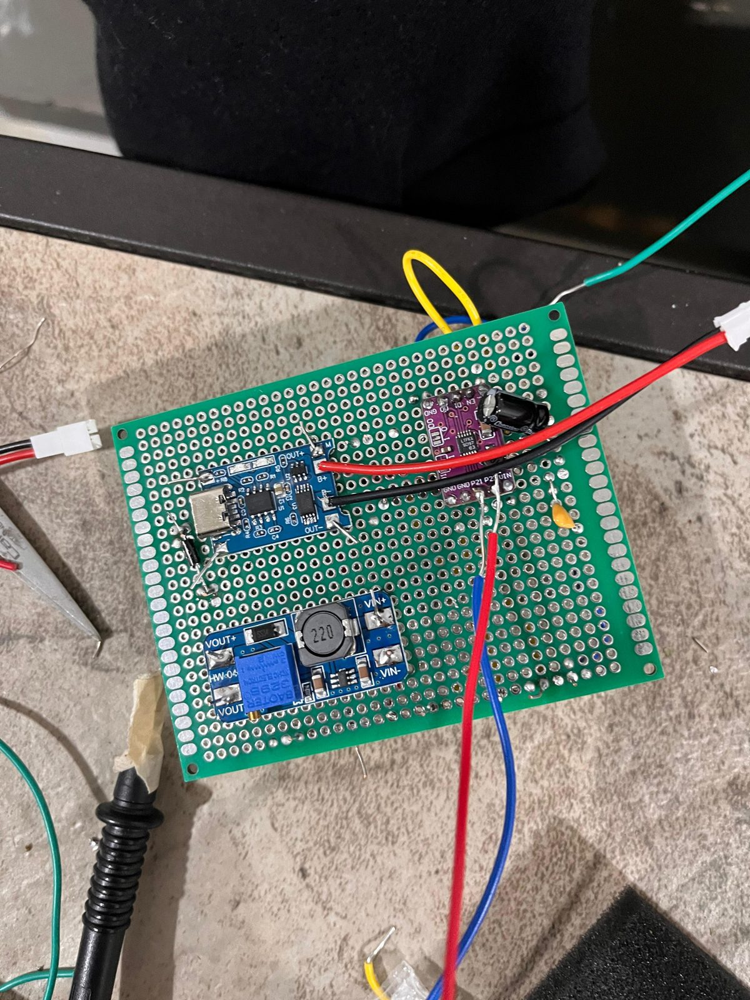
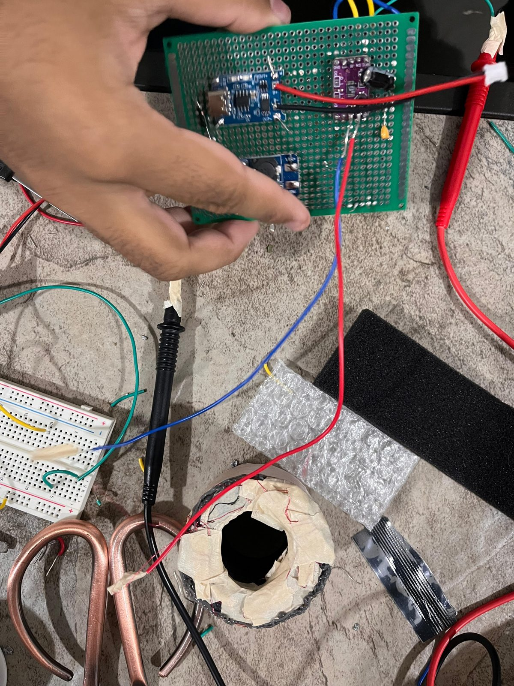
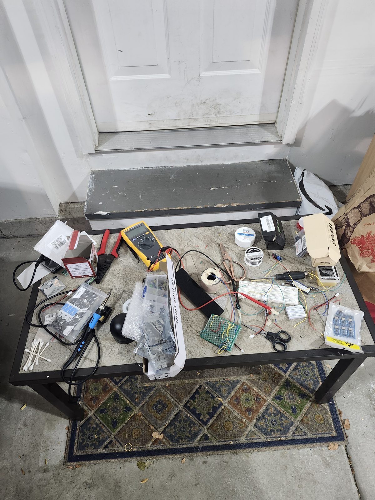

Fluxpack
The induction backpack. We're building a pack that makes electricity as you walk: a magnet swings through a coil with every step, and a small circuit stores the current in a battery.
Made by Aadit Naik (UC Berkeley ’30) and Kaviya Ramesh (Georgia Tech ’30)
Simplified diagram, not to scale
What it is
Fluxpack is a backpack with a small generator built in. As you walk, a magnet inside swings back and forth through a coil of wire. That motion induces an electric current, and a short chain of circuit modules turns it into steady power for a lithium-ion battery.
So far we have built and tested the three main parts on their own: the coil, the power circuit and the pendulum. Next, they go into a backpack.
Why it matters
People who deal with frequent power outages are often left unable to keep small essentials charged. A pack that makes its own power as you walk doesn't need sunlight or an outlet. Hikers and others far from any outlet face a similar problem.
How it works
-
Walk
The body does the work
Each step shakes the pack. A magnet inside slides back and forth through the coil.
-
Induce
A moving field makes current
The changing magnetic flux through the coil induces an alternating voltage across its ends.
-
Store
Power circuit to battery
Three small modules turn that AC into steady DC, step it up, and charge a lithium-ion cell.
More turns N and a faster-changing flux Φ give more voltage, which is why the coil has 5,000 turns.
The power chain
Rectifies the coil's alternating output into steady DC.
Boost converter that steps the voltage up.
Charging module for the lithium-ion battery.
Build sheet
| Generator | Oscillating magnet through a fixed coil |
|---|---|
| Coil form | Custom CAD design, 3D printed |
| Winding | 5,000 turns, 32 AWG magnet wire |
| Output | Bench tests: LTC3588 about 1.8 V, MT3608 about 4 V. Designed to charge a lithium-ion battery. |
| Testing | Coil output, efficiency and safety, across several prototypes |
Bench tests
Testing the coil by hand: the magnet goes in and out of the coil while a multimeter reads the output.
The mechanism
The swinging part, tested on its own in a cardboard box.
The build
From breadboard tests to the soldered power board.






What's next
We're finishing installing the coil, circuit and pendulum in a backpack, then testing it while walking.